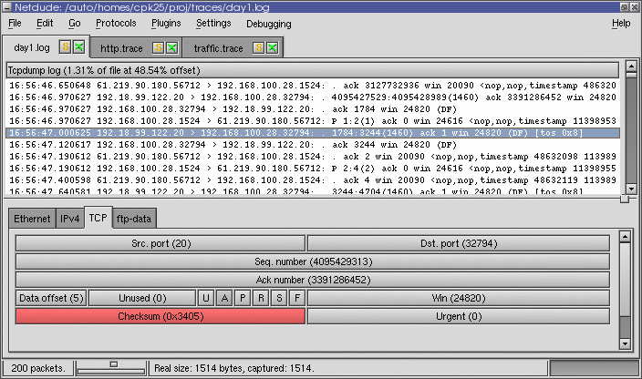

Examining and Dissecting tcpdump/libpcap Traces
Almost every network research involves trace-based analysis with a captured stream of packets. This article presents a set of analysis tools which extract detailed information from tcpdump/libpcap traces.
Having a pcap trace in place, it is about to gather futher details from it, e.g., the traffic peak rate or which protocol accounts for the largest share. Many tools exist to accomplish this task. Below I will describe three tools that particularly caught my attention while working with network traffic: tcpdstat, ipsumdump, and Netdude.
tcpdstat
Written by Kenjiro Cho, tcpdstat is a powerful tool that performs an in-depth protocol breakdown by bytes and packets. It further displays average and maximum transfer rates, IP flow information, and packet size distribution. Dave Dittrich applied several tcpdstat the tool to support a broader range of protocols and services, and to report more details about flow rates.
Here is an example output (of Dave’s enhanced version):
DumpFile: trace.pcap
FileSize: 98876.89MB
Id: 200703011241
StartTime: (anonymized)
EndTime: (anonymized)
TotalTime: 7216.13 seconds
TotalCapSize: 96826.91MB CapLen: 1514 bytes
# of packets: 134347439 (96826.91MB)
AvgRate: 113.10Mbps stddev:47.96M PeakRate: 260.92Mbps
### IP flow (unique src/dst pair) Information ###
# of flows: 1612801 (avg. 83.30 pkts/flow)
Top 10 big flow size (bytes/total in %):
33.6% 3.2% 2.2% 1.5% 1.4% 1.0% 1.0% 0.9% 0.8% 0.8%
### IP address Information ###
# of IPv4 addresses: 480065
Top 10 bandwidth usage (bytes/total in %):
34.4% 34.4% 3.3% 3.3% 3.0% 2.7% 2.3% 1.8% 1.5% 1.5%
### Packet Size Distribution (including MAC headers) ###
<<<<
[ 32- 63]: 20839652
[ 64- 127]: 38798140
[ 128- 255]: 3947049
[ 256- 511]: 3746280
[ 512- 1023]: 5675556
[ 1024- 2047]: 61340762
>>>>
### Protocol Breakdown ###
<<<<
protocol packets bytes bytes/pkt
------------------------------------------------------------------------
[0] total 134347439 (100.00%) 101530372750 (100.00%) 755.73
[1] ip 134347439 (100.00%) 101530372750 (100.00%) 755.73
[2] tcp 118172509 ( 87.96%) 97361936181 ( 95.89%) 823.90
[3] ftpdata 18640 ( 0.01%) 16529412 ( 0.02%) 886.77
[3] ftp 72372 ( 0.05%) 4697330 ( 0.00%) 64.91
[3] ssh 13849679 ( 10.31%) 11113777353 ( 10.95%) 802.46
[3] telnet 9007 ( 0.01%) 1526445 ( 0.00%) 169.47
[3] smtp 2133471 ( 1.59%) 1447293494 ( 1.43%) 678.38
[3] name 23 ( 0.00%) 1426 ( 0.00%) 62.00
[3] dns 35071 ( 0.03%) 7071657 ( 0.01%) 201.64
[3] http(s) 25043480 ( 18.64%) 30677552254 ( 30.22%) 1224.97
[3] http(c) 16165378 ( 12.03%) 2182851897 ( 2.15%) 135.03
[3] kerb5 370 ( 0.00%) 30610 ( 0.00%) 82.73
[3] pop3 82382 ( 0.06%) 26718043 ( 0.03%) 324.32
[3] sunrpc 30 ( 0.00%) 3002 ( 0.00%) 100.07
[3] ident 5107 ( 0.00%) 322074 ( 0.00%) 63.07
[3] nntp 1262 ( 0.00%) 292679 ( 0.00%) 231.92
[3] epmap 209144 ( 0.16%) 12909976 ( 0.01%) 61.73
[3] netb-se 404237 ( 0.30%) 47178014 ( 0.05%) 116.71
[3] imap 125983 ( 0.09%) 100889454 ( 0.10%) 800.82
[3] bgp 482 ( 0.00%) 43139 ( 0.00%) 89.50
[3] ldap 7131 ( 0.01%) 1434769 ( 0.00%) 201.20
[3] https 2941177 ( 2.19%) 1802114169 ( 1.77%) 612.72
[3] ms-ds 245214 ( 0.18%) 24263111 ( 0.02%) 98.95
[3] rtsp 1023246 ( 0.76%) 691696863 ( 0.68%) 675.98
[3] ldaps 2828 ( 0.00%) 209272 ( 0.00%) 74.00
[3] socks 7883 ( 0.01%) 1340672 ( 0.00%) 170.07
[3] kasaa 13348 ( 0.01%) 1124944 ( 0.00%) 84.28
[3] mssql-s 309786 ( 0.23%) 20411848 ( 0.02%) 65.89
[3] squid 51381 ( 0.04%) 14079861 ( 0.01%) 274.03
[3] ms-gc 1865 ( 0.00%) 493682 ( 0.00%) 264.71
[3] ms-gcs 2034 ( 0.00%) 481178 ( 0.00%) 236.57
[3] hotline 6 ( 0.00%) 682 ( 0.00%) 113.67
[3] realaud 19784 ( 0.01%) 13197979 ( 0.01%) 667.10
[3] icecast 390203 ( 0.29%) 291651836 ( 0.29%) 747.44
[3] gnu6346 6324 ( 0.00%) 1048473 ( 0.00%) 165.79
[3] gnu6348 342 ( 0.00%) 26047 ( 0.00%) 76.16
[3] gnu6349 14 ( 0.00%) 2767 ( 0.00%) 197.64
[3] gnu6350 4 ( 0.00%) 732 ( 0.00%) 183.00
[3] irc6666 7 ( 0.00%) 434 ( 0.00%) 62.00
[3] irc6667 1379 ( 0.00%) 196155 ( 0.00%) 142.24
[3] irc6668 2 ( 0.00%) 124 ( 0.00%) 62.00
[3] irc6669 9 ( 0.00%) 666 ( 0.00%) 74.00
[3] napster 21 ( 0.00%) 1344 ( 0.00%) 64.00
[3] irc7000 7 ( 0.00%) 824 ( 0.00%) 117.71
[3] http-a 129807 ( 0.10%) 71136838 ( 0.07%) 548.02
[3] other 54862568 ( 40.84%) 48787331392 ( 48.05%) 889.26
[2] udp 13069221 ( 9.73%) 3895596348 ( 3.84%) 298.07
[3] name 18 ( 0.00%) 1989 ( 0.00%) 110.50
[3] dns 1799081 ( 1.34%) 264263480 ( 0.26%) 146.89
[3] kerb5 100 ( 0.00%) 25812 ( 0.00%) 258.12
[3] sunrpc 581 ( 0.00%) 57157 ( 0.00%) 98.38
[3] ntp 50387 ( 0.04%) 4534933 ( 0.00%) 90.00
[3] epmap 17 ( 0.00%) 1824 ( 0.00%) 107.29
[3] netb-ns 148619 ( 0.11%) 14736588 ( 0.01%) 99.16
[3] netb-se 1272 ( 0.00%) 328673 ( 0.00%) 258.39
[3] ms-ds 8 ( 0.00%) 883 ( 0.00%) 110.38
[3] kazaa 29 ( 0.00%) 3546 ( 0.00%) 122.28
[3] mssql-s 44 ( 0.00%) 3832 ( 0.00%) 87.09
[3] mcast 7216682 ( 5.37%) 1943012688 ( 1.91%) 269.24
[3] realaud 459195 ( 0.34%) 273532235 ( 0.27%) 595.68
[3] halflif 81 ( 0.00%) 5890 ( 0.00%) 72.72
[3] starcra 45 ( 0.00%) 6367 ( 0.00%) 141.49
[3] everque 9 ( 0.00%) 1351 ( 0.00%) 150.11
[3] unreal 1066 ( 0.00%) 93951 ( 0.00%) 88.13
[3] quake 20 ( 0.00%) 1860 ( 0.00%) 93.00
[3] other 3384119 ( 2.52%) 1394472416 ( 1.37%) 412.06
[2] icmp 3105709 ( 2.31%) 272840221 ( 0.27%) 87.85
[2] frag 30903 ( 0.02%) 25672129 ( 0.03%) 830.73
>>>>
At first, tcpdstat shows a summary including the trace size, time, and number of packets. Most interesting here is the average and peak traffic rate in Mbps and the standard deviation, measuring how bursty the traffic was. The second block shows the number of IP flows (i.e., the pair of src and dst address) and the 10 biggest flows in percent. Next, the total disctinct IP addresses are displayed along with the top 10 bandwith usage in percent. Unfortunately, only the percent values are shown and not the addresses themselves. The next block displays the packet size distribution including MAC headers. The last big block is the very informative, illustrating a per-packet and per-byte protocol breakdown. The IP protocol is partitioned in TCP, UDP, ICMP, and fragmented packets. TCP and UDP packets are further broken down into their application layer protocols.
Tcpdstat is great to get a bunch of information out of a trace, very easy to use, but it lacks some flexibility. The tool is your perfect choice if the above output is enough for you. Otherwise, you might incorporate further tools into your analysis.
ipsumdump
The ipsumpdump utility from Eddie Kohler is the “swiss-army knife” for trace analysis. Itsummarizes TCP/IP dump files into a nice ASCII format that can be intuitively understood and easily parsed.
Ipsumdump can read packets from network interfaces, from tcpdump files, and from existing ipsumdump files. It will transparently uncompress tcpdump or ipsumdump files when necessary. It can randomly sample traffic, filter traffic based on its contents, anonymize IP addresses, and sort packets from multiple dumps by timestamp. Also, it can optionally create a tcpdump file containing actual packet data.
To demonstrate its versatility, I provided the output of ipsumdump-h below:
'Ipsumdump' reads IP packets from tcpdump(1) files, or network interfaces,
and summarizes their contents in an ASCII log.
Usage: ipsumdump [CONTENT OPTIONS] [-i DEVNAMES | FILES] > LOGFILE
Options that determine summary dump contents (can give multiple options):
-t, --timestamp Include packet timestamps.
-T, --first-timestamp Include flow-begin timestamps.
-s, --src Include IP source addresses.
-d, --dst Include IP destination addresses.
-S, --sport Include TCP/UDP source ports.
-D, --dport Include TCP/UDP destination ports.
-l, --length Include IP lengths.
-p, --protocol Include IP protocols.
--id Include IP IDs.
-g, --fragment Include IP fragment flags ('F' or '.').
-G, --fragment-offset Include IP fragment offsets.
--ip-sum Include IP checksums.
--ip-opt Include IP options.
-F, --tcp-flags Include TCP flags word.
-Q, --tcp-seq Include TCP sequence numbers.
-K, --tcp-ack Include TCP acknowledgement numbers.
-W, --tcp-window Include TCP receive window (unscaled).
-O, --tcp-opt Include TCP options.
--tcp-sack Include TCP selective acknowledgement options.
--udp-length Include UDP lengths.
-L, --payload-length Include payload lengths (no IP/UDP/TCP headers).
--payload Include packet payloads as quoted strings.
--payload-md5 Include MD5 checksum of packet payloads.
--capture-length Include lengths of captured IP data.
-c, --packet-count Include packet counts (usually 1).
--link Include link numbers (NLANR/NetFlow).
Data source options (give exactly one):
-r, --tcpdump Read tcpdump(1) FILES (default).
-i, --interface Read network devices DEVNAMES until interrupted.
--ipsumdump Read existing ipsumdump FILES.
--format FORMAT Read ipsumdump FILES with format FORMAT.
--dag[=ENCAP] Read DAG-format FILES.
--nlanr Read NLANR-format FILES (fr/fr+/tsh).
--netflow-summary Read summarized NetFlow FILES.
--tcpdump-text Read tcpdump(1) text output FILES.
Other options:
-o, --output FILE Write summary dump to FILE (default stdout).
-b, --binary Create binary output file.
-w, --write-tcpdump FILE Also dump packets to FILE in tcpdump(1) format.
-f, --filter FILTER Apply tcpdump(1) filter FILTER to data.
-A, --anonymize Anonymize IP addresses (preserves prefix & class).
--no-promiscuous Do not put interfaces into promiscuous mode.
--bad-packets Print '!bad' messages for bad headers.
--sample PROB Sample packets with PROB probability.
--multipacket Produce multiple entries for a flow identifier
representing multiple packets (NetFlow only).
--collate Collate packets from data sources by timestamp.
--interval TIME Stop after TIME has elapsed in trace time.
--limit-packets N Stop after processing N packets.
--map-address ADDRS When done, print to stderr the anonymized IP
addresses and/or prefixes corresponding to ADDRS.
--record-counts TIME Record packet counts every TIME seconds in output.
--random-seed SEED Set random seed to SEED (default is random).
--no-mmap Don't memory-map input files.
-q, --quiet Do not print progress bar.
--config Output Click configuration and exit.
-V, --verbose Report errors verbosely.
-h, --help Print this message and exit.
-v, --version Print version number and exit.
Report bugs to <kohler@cs.ucla.edu>.
Among the above options, some deserve more attention. For example, the
--payload-md5 option includes a MD5 checksum (e.g. i4CxGSojVHB2XcZw97ZpQb)
of the packet payload in the dump. This option comes in handy when you want to
check for packet duplicates. Another nifty option is --anonymize. Since
traces can contain sensitive data, it is possible to anonymize the IP addresses
in the output in order to prevent information leakage. The anonymization
preserves prefix and class. In high-volume networks, the
--sample=p option might be interesting. It samples packets with probability
p. That is, p is the chance that a packet will cause output to be
generated. The actual probability may differ from the specified probability,
due to fixed point arithmetic. If you want to merge several trace files
retaining the temporal order, --collate together with --write-tcpdump sorts
your packets with increasing timestamp.
Summing up, ipsumdump is a flexible trace analysis tool complementing tcpdump. However, it does not feature predefined evaluation methods like tcpdstat (which is actually not a design goal). Nevertheless, ipsumdump is a valuable tool to quickly generate easily readable ASCII output or to obtain well-formatted output for subsequent processing/scripting. It unveils its real power when used for trace manipulation such as merging, modifying, or anonymizing tcpdump traces.
Netdude
Netdude (Network dump data displayer and editor) is a graphical tool to edit tcpdump trace files, written by Christian Kreibich. In fact, it is a front-end to the libnetdude packet manipulation library. Since complex trace manipulation is non-trivial and often requires custom coding, Netdude provides a GUI enabling users to
- edit traces of arbitrary size in a scalable fashion. Netdude never loads more than a configurable maximum number of packets into memory at any time.
- edit multiple traces at the same time, making it easy to move packets from one trace to a different one.
- Modify every field in protocol headers for which a protocol plugin provides support. These modifications can be applied to either only individually selected packets, packets currently in memory, or all packets in the trace, including the ones not currently loaded.
- Filter packets by using filter plugins. Netdude 0.4.6 ships with a BPF filter plugin that allows you to use the standard BPF filter language to define your filters.
- Inspect and edit raw packet content using Netdude’s payload editor in either hex or ASCII mode whichever is more convenient for the payload you are editing.
- Move packets around, duplicate them, remove them from traces.
- See the tcpdump output updating instantly according to the modifications you’re making.
- Conveniently use the clipboard to select lines from the tcpdump output for situations when you need the tcpdump output only (e.g., when writing documentation, papers or emails).
As soon as packet editing is part of the game, Netdude offers an interactive and user-friendly GUI to perform even sophisticated manipulations. The screenshot below illustrates how one can graphically manipulate the TCP header fields.

Conclusion
Nowadays, captured network traffic is mostly available as a tcpdump/libpcap trace. In this article, I introduce three tools enabling in-depth trace examination. At first, the tool tcpdstat provides a high-level view of the trace ingredients with a detailed protocol breakdown. Second, ipsumdump offers a flexible means to generate nicely formatted ASCII dump. It can be used to quickly extract a desired piece of information or as a multi-purpose output generator. Finally, Netdude features a comfortable GUI to selectively manipulate packet details. Equipped with this arsenal, trace-based network analysis feels like a hot knife through butter.
Load Comments